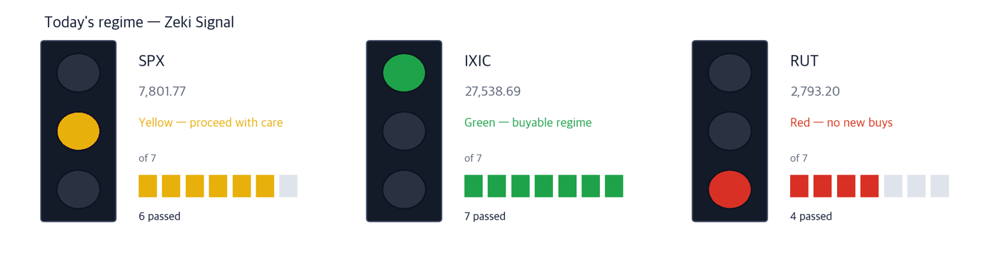

Dow 51,180 -0.66% | Nasdaq Comp. 27,539 -0.22% | S&P 500 7,802 -0.22% | Russell 2000 2,793 -1.31% | 10-yr Treasury 5.28% | Zeki Signal Yellow |

Green favours buying, yellow says wait, red says hold off. The cells count how many of seven conditions are met - more cells mean the advance is broader. Calculated on the October 7 close. The Nasdaq Composite meets all seven and is green. The S&P 500 meets six and is yellow. The Russell 2000 meets four and is red. All three counts are unchanged from October 6. Combined, the signal is yellow.
Wait — the stance the signal implies.
New York stocks fell together on October 7. The Dow lost 0.66% to 51,179.87. The S&P 500 slipped 0.22% to 7,801.77 and the Nasdaq Composite 0.22% to 27,538.69, a day after both set record closes.
During the session the 10-year Treasury yield touched 5.36%, its highest since January 2002. Strong demand at a $39 billion 10-year auction in the afternoon pulled it back to about 5.28%. (IBD, WSJ)
Fed minutes showed most officials expect one more increase this year, but no urgency for October. Markets now price a 17% chance of an October hike, down from 37% a week earlier. (WSJ, IBD)
Small caps took the rate rise hardest. The Russell 2000 fell 1.31% and closed just above its 200-day average. Smaller companies that borrow more feel higher interest costs first.
① Watch whether the 10-year yield retakes its October 7 peak. It touched a 24-year high on October 7 and eased to about 5.28%. A move back above would hit small caps and richly valued tech first.
② Money moved into drugmakers. Health care was the top S&P 500 sector on October 7, with pharmaceuticals up 2%. AbbVie cleared its $267.47 buy point, and Eli Lilly closed decisively above its 50-day average for the first time since late August. (IBD)
③ NetApp is the one well-grounded name. It hit an intraday record of $238.08 on October 7. But it is up 18% since its September 21 breakout, close to the 20–25% zone where partial profits are usually taken. (IBD)
One number — 5.36%. That was the 10-year Treasury yield at its October 7 peak, the highest since January 2002. (IBD) China's 10-year fell to 1.7% the same day, moving against the global trend. (WSJ)
| Date | What to watch | What it changes |
|---|---|---|
| Fri Oct. 9, pre-open | Delta Air Lines Q3 results | The first big report of earnings season. It shows how much of the fuel bill airlines can pass on |
| Tue Oct. 13 | Apple product event | Smart-home devices are due. Apple sits just under its $344.57 buy point |
| Wed Oct. 14, 8:30 ET | US consumer prices (September) | A hot reading tends to lift the 10-year yield, and growth stocks feel it first |
Samsung Electronics forecast third-quarter operating profit above $80 billion for the first time, on higher prices for memory chips used in AI servers. (WSJ) It still came in slightly below estimates. (IBD)
On October 7 the companies that store and manage data were strong in the US. NetApp hit a record and Sandisk rose 1.92%. The more data AI uses, the more storage gets ordered.
| Close | Day | Week | 20 sessions |
|---|---|---|---|
| $235.77 | +3.20% | +12.23% | +27.62% |
| 3 months | Zeki Strength | Zeki Flow | From high |
|---|---|---|---|
| +37.71% | 95 | A | -1.0% |
| Who | NetApp, which sells enterprise data-storage hardware and management software. |
| What | Rose 3.20% to $235.77 on October 7, after an intraday record of $238.08. |
| When | As of the October 7 close. |
| Where | Listed on Nasdaq. |
| Why | AI data centers need more equipment to hold data. July-quarter earnings per share rose 66% and sales 30%. |
| How | Up 18% since clearing its $199.62 buy point on September 21. Five-day volume is 1.36 times the 50-day average. |
Verdict — Clears 4 of 4. Up over 20 sessions, Zeki Strength, and both flow grades all pass. Evercore ISI upgraded the stock on October 7 with a $300 target. (IBD)
Confirmation — A close above the October 7 high of $238.08.
Would be wrong if — A close below the 21-day exponential average of $208.05.
| Close | Day | Week | 20 sessions |
|---|---|---|---|
| $1,692.42 | +1.92% | -2.73% | -4.07% |
| 3 months | Zeki Strength | Zeki Flow | From high |
|---|---|---|---|
| -8.92% | 97 | C | -28.1% |
| Who | Sandisk, which makes NAND flash memory for storing data. |
| What | Rose 1.92% to $1,692.42 on October 7, 28.1% below its June 22 one-year high. |
| When | As of the October 7 close, the day before Samsung's preview. |
| Where | Listed on Nasdaq. |
| Why | Samsung's profit came from higher memory prices, and the same prices apply to NAND flash. |
| How | Building a handle in a deep cup base and testing its downtrend line. Five-day volume is light at 0.60 times the 50-day average. (IBD) |
Verdict — Clears 2 of 4. But it fell 4.1% over 20 sessions; 3-month Zeki Flow is C, short of A or B.
Confirmation — A close above the six-session high of $1,802.00.
Would be wrong if — A close below the 50-day average of $1,564.59.
Higher rates shrink today's value of future profits, so high-expectation tech stocks lose value first. Many industry groups have fallen sharply, and tech favorites no longer command their old multiples. (WSJ)
That day health care led the sectors. Industrials, materials and real estate each fell more than 1%. (IBD) We read it as money moving to large drugmakers with profits today and light debt.
| Close | Day | Week | 20 sessions |
|---|---|---|---|
| $271.36 | +1.75% | +3.73% | +8.15% |
| 3 months | Zeki Strength | Zeki Flow | From high |
|---|---|---|---|
| +9.36% | 75 | A | -1.3% |
| Who | AbbVie, a large drugmaker focused on immune-disease treatments, with a $471 billion market value. |
| What | Rose 1.75% to $271.36 on October 7, after an intraday one-year high of $274.94. |
| When | As of the October 7 close. |
| Where | Listed on the New York Stock Exchange. |
| Why | Its earnings are steady today even as rates rise, so money moved in. |
| How | Cleared the $267.47 buy point of a seven-week base on volume 1.29 times the 50-day average. The buy zone runs 5% higher, to $280.84. (IBD) |
Verdict — Clears 3 of 4. But Zeki Strength is 75, short of 90.
Confirmation — A close above the October 7 high of $274.94.
Would be wrong if — A close back below the $267.47 buy point.
| Close | Day | Week | 20 sessions |
|---|---|---|---|
| $1,188.72 | +2.70% | +2.73% | +5.74% |
| 3 months | Zeki Strength | Zeki Flow | From high |
|---|---|---|---|
| -2.18% | 70 | B | -8.0% |
| Who | Eli Lilly, the large drugmaker that grew on obesity and diabetes treatments. |
| What | Rose 2.70% to $1,188.72 on October 7, 8.0% below its August 19 one-year high. |
| When | As of the October 7 close. |
| Where | Listed on the New York Stock Exchange. |
| Why | It led the health-care advance alongside AbbVie. |
| How | Closed decisively above its 50-day average ($1,173.89) for the first time since late August. Five-day volume is 0.84 times the 50-day average. (IBD) |
Verdict — Clears 3 of 4. But Zeki Strength is 70, short of 90.
Confirmation — A close above the September 30 intraday high of $1,215.
Would be wrong if — A close back below the 50-day average of $1,173.89.
| Close | Day | Week | 20 sessions |
|---|---|---|---|
| $413.08 | +2.60% | -2.00% | +5.57% |
| 3 months | Zeki Strength | Zeki Flow | From high |
|---|---|---|---|
| +14.27% | 79 | A | -7.6% |
| Who | Amgen, a large maker of biotech medicines including cancer-support drugs. |
| What | Rose 2.60% to $413.08 on October 7, the best gain in the Dow. |
| When | As of the October 7 close. Third-quarter results are due around November 3. |
| Where | Listed on Nasdaq. |
| Why | After biotech's sharp swings, highly rated large caps are still building bases. |
| How | Back above its 50-day average ($410.14), 7.6% below its August 25 one-year high. (IBD) |
Verdict — Clears 2 of 4. But Zeki Strength is 79, short of 90; 2-week Zeki Flow slipped to D from A.
Confirmation — A close above the six-session high of $426.59.
Would be wrong if — A close back below the 50-day average of $410.14, about 1% away.
Oracle and Broadcom are seeking loans worth tens of billions of dollars to pay for AI chips, with Apollo, Blackstone and Goldman Sachs among the lenders in talks. (WSJ) But both have their trend gauge (the gap between 25- and 50-day averages) below zero. Oracle is 55% and Broadcom 24% below their one-year highs. Adding debt while rates rise is a burden. We pick no names from this theme today.
One more left out for the same reason — Caterpillar. It fell 5.75% on October 7, the worst in the Dow, and its trend gauge is below zero. Construction and mining machinery fell 4.6% as a group. (IBD)
| Name | ①up over 20 sessions | ②Strength 90+ | ③flow 3mo A or B | ④2wk not weaker | Met | Weight of evidence |
|---|---|---|---|---|---|---|
| NTAP | O | O | O | O | 4/4 | Well grounded |
| SNDK | X | O | X | O | 2/4 | Needs checking |
| ABBV | O | X | O | O | 3/4 | Needs checking |
| LLY | O | X | O | O | 3/4 | Needs checking |
| AMGN | O | X | O | X | 2/4 | Needs checking |
The four columns ask: ① up over 20 sessions? ② Zeki Strength 90 or higher? ③ 3-month Zeki Flow A or B? ④ flow not weaker over the last two weeks? The count of O's sets the weight of evidence. Of today's five names, 2 clear ② and 4 clear ③.
The US has no daily disclosure of how many shares foreign or institutional investors bought. The grades below are an estimate of buying pressure, not a tally. Data run through the October 7 close.
| Name | Flow 3mo→2wk | Volume | How to read it |
|---|---|---|---|
| PTC Inc PTC | A → A = | 6.22x | Watch✓ — Buying over both 3 months and 2 weeks |
| Public Service Enterprise Group PEG | E → A ↑ | 1.99x | Watch✗ — Buyers came in hard |
| STARWOOD PROPERTY TRUST INC. Starwood Property Trust STWD | E → E = | 1.80x | Selling over both 3 months and 2 weeks |
| AGNC Investment AGNC | E → E = | 1.58x | Selling over both 3 months and 2 weeks |
| MGM Resorts International MGM | E → E = | 1.49x | Selling over both 3 months and 2 weeks |
| Frontline Plc FRO | A → A = | 1.42x | Watch✓ — Buying over both 3 months and 2 weeks |
| Axsome Therapeutics AXSM | E → E = | 1.42x | Selling over both 3 months and 2 weeks |
| NetApp Inc NTAP | A → A = | 1.36x | Watch✓ — Buying over both 3 months and 2 weeks |
Flow grades are not a signal to buy the next day. Measured over 21 years of US data, later returns by grade could not be told apart. This table only shows what is happening now.
Even when the story and the price agree, we check the money separately. The table answers whether five-day volume beat the 50-day average.
| Name | Above the 50-day average? | Zeki Flow 3mo → 2wk | How to read it |
|---|---|---|---|
| NetApp (NTAP) | 1.36x ✓ above | A → A | Watch — Buying over both 3 months and 2 weeks |
| Sandisk (SNDK) | 0.60x ✗ below | C → C | Wait — Holding, but volume has dried up |
| AbbVie (ABBV) | 1.20x ✓ above | A → A | Watch — Buying over both 3 months and 2 weeks |
| Eli Lilly (LLY) | 0.84x ✗ below | B → B | Watch — Buying over both 3 months and 2 weeks |
| Amgen (AMGN) | 0.94x ✗ below | A → D | Wait — Falling, but volume has dried up |
The words do not describe our trades. Watch means price and volume point the same way. Check means the grade improved but trading is thin. Wait means the trend holds but volume has dried up. Caution means the grade is falling while volume rises.
| Weight of evidence | Names | Beat S&P 500 | Winners led by | Losers trailed by | All averaged |
|---|---|---|---|---|---|
| Well grounded | 43 | 28 / 43 | +4.55%p | -4.09%p | +1.54%p |
| Grounded | 21 | 11 / 21 | +2.94%p | -3.70%p | -0.23%p |
| Needs checking | 20 | 7 / 20 | +4.04%p | -3.05%p | -0.57%p |
| No basis | 4 | 0 / 4 | none | -2.42%p | -2.42%p |
| Excluded | 7 | 0 / 7 | none | -3.51%p | -3.51%p |
| Well grounded 43 | +1.54%p | ||||||
| Grounded 21 | −0.23%p | ||||||
| Needs checking 20 | −0.57%p | ||||||
| No basis 4 | −2.42%p | ||||||
| Excluded 7 | −3.51%p |
The centre line is S&P 500. Right is ahead, left is behind. The grey number is how many names are in that band.
Of 43 Well grounded names, 28 beat S&P 500. Those 28 led by 4.5%p on average; the 15 that lost trailed by 4.1%p. All together: +1.5%p.
| Weight of evidence | Names | Beat S&P 500 | Winners led by | Losers trailed by | All averaged |
|---|---|---|---|---|---|
| Well grounded | 2 | 2 / 2 | +3.70%p | none | +3.70%p |
| Grounded | 1 | 0 / 1 | none | -4.46%p | -4.46%p |
| Needs checking | 1 | 0 / 1 | none | -12.04%p | -12.04%p |
| Excluded | 1 | 0 / 1 | none | -14.34%p | -14.34%p |
| Well grounded 2 | +3.70%p | ||||||
| Grounded 1 | −4.46%p | ||||||
| Needs checking 1 | −12.04%p | ||||||
| Excluded 1 | −14.34%p |
The centre line is S&P 500. Right is ahead, left is behind. The grey number is how many names are in that band.
Of 2 Well grounded names, 2 beat S&P 500. Those 2 led by 3.7%p on average; none lost. All together: +3.7%p.
After 60 sessions (about three months): results first arrive on Dec 3; they are added here as a table as they fill.
Verdict. Once both markets together reach 60 cases for a window, we run the test fixed in advance and print what it says. 5 sessions, 166 cases — Not shown to beat the index. But higher-grade names did better. (48.2% beat the index) · 20 sessions: 5 of 60 · 60 sessions: 0 of 60
| When | What to watch | What it means |
|---|---|---|
| First 30 minutes (09:30–10:00 ET) | Is Sandisk trading above its October 7 close of $1,692.42? | Above means Samsung's results are lifting memory stocks. Below means traders focused on the miss |
| During the session | Does the 10-year yield top its October 7 peak, a 24-year high? | If so, small caps and richly valued tech fall first. Watch whether drugmakers hold |
| Last 30 minutes (15:30–16:00 ET) | Does the Russell 2000 close above its 200-day average (2,786)? | A close below means the rate burden has spread across small caps |
Treasury under Secretary Bessent has seen tension and turnover, with worry that prices and borrowing costs could decide the midterms. (WSJ) Shell expects a record third-quarter refining margin on the Middle East war. West Texas crude settled at $88.28 a barrel on October 7, its lowest close since August 31. (WSJ, IBD)
This is the Rex Way, ZekiRex™